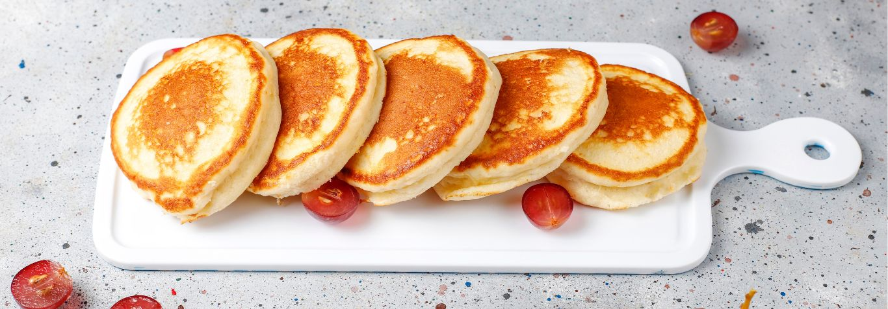

Ingredients
- flour
- baking powder
- tablespoon of white sugar
- milk
- butter
- 1 egg
Baking directions
- Sift the dry ingredients together.
- Make a well, then add the wet ingredients. Stir to combine.
- Scoop the batter onto a hot griddle or pan.
- Cook for two to three minutes, then flip.
- Continue cooking until brown on both sides.